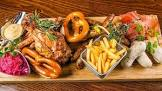

Німецька Кухня
Німецька Кухня
Німецька Кухня
Німецька Кухня Народна кулінарія Німеччини на основі Баварських ковбасок - Айнтопф
Німецьке пиво - популярне в Баварії -Німецьке пиво

Баварські ковбаски-дуже смачні ковбаски-Баварські ковбаски

Автор: Ніколас Браун
рік створення сайту: 2023